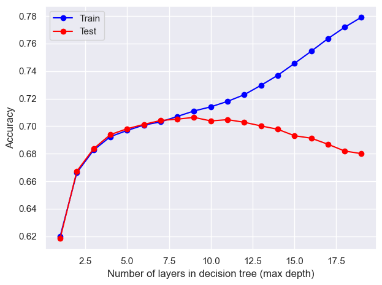
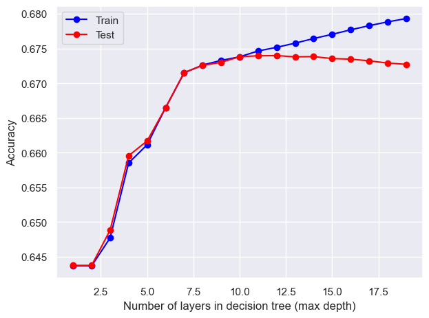

A Decision Tree is a non-parametric supervised machine learning model that can be applied to both classification and regression. By forming the sequential binary questions, it is very easy to interpret. Those binary questions are formed minimizing the errors. Its flexibility to adapt to any type of dataset and problem leads to overfitting, which requires an additional step of pruning to improve their accuracy.
This inclination of overfitting can be reduced by doing Random Forests model instead. Random Forests fit numerous simple tree models and predicts the target by averaging or majority voting. This aggregation brings a flexibility to deal with complex datasets and an improvement on an accuracy.
In this section, the goal is finding out which features are the most important classifying successful immigrants and natives. Also there will be a comparison between a random classifier, a simple decision tree, and a random forest model validating the result of important features.
Data Preparation
# Import necessary librariesimport pandas as pdimport numpy as npimport seaborn as snsimport matplotlib.pyplot as pltfrom sklearn import treefrom sklearn.ensemble import RandomForestClassifierfrom sklearn.model_selection import train_test_splitfrom collections import Counterfrom sklearn.metrics import accuracy_scorefrom sklearn.metrics import precision_scorefrom sklearn.metrics import recall_scoresns.set_theme(palette="Set2")# Load the ACS data from the provided CSV fileacs = pd.read_csv("./data/acs_cleaned.csv")# Convert specific columns to categorical types for better memory usage and analysisacs['NATIVITY'] = acs['NATIVITY'].astype('category')acs['DECADE'] = acs['DECADE'].astype('category')acs['ENG'] = acs['ENG'].astype('category')acs['MAR'] = acs['MAR'].astype('category')acs['RAC1P'] = acs['RAC1P'].astype('category')acs['SEX'] = acs['SEX'].astype('category')acs['ESR'] = acs['ESR'].astype('category')acs['SCHL'] = acs['SCHL'].astype('category')acs['SUCCESS'] = acs['SUCCESS'].astype('category')# Separate data into immigrants and natives based on the 'NATIVITY' columnimmigrants = acs[acs["NATIVITY"]==2]natives = acs[acs["NATIVITY"]==1]immigrant_X = immigrants.drop(["NATIVITY","POBP","SCHL","WAGP",'SUCCESS'], axis=1)immigrant_y = immigrants['SUCCESS']natives_X = natives.drop(["NATIVITY","POBP","SCHL","WAGP",'SUCCESS'], axis=1)natives_y = natives['SUCCESS']immigrant_X.head()
DECADE
ENG
MAR
RAC1P
SEX
ESR
AGEP
17
5
2
3
1
2
1
47
26
5
4
2
1
2
6
87
64
5
0
5
1
2
6
59
168
4
2
5
6
1
6
55
192
6
3
5
8
2
6
61
Similar to Naive Bayes section, US Census data is splitted into immigrants’ and native-borns’ data for the comparison. The WAGP and SCHL are removed because the target label SUCCESS is made from those two variables. POBP and NATIVITY variables are also removed because the data is splitted by NATIVITY and POBP is not an effective predictor. Other variables are changed to a category type from integer as they should be.
Functions
def random_classifier(y_data): y_pred = [] max_label = np.max(y_data) # Find the maximum label value in y_datafor i inrange(0, len(y_data)):# Generate random predictions within the range of label values y_pred.append(int(np.floor((max_label +1) * np.random.uniform(0, 1))))# Display the count of predicted values and their probabilitiesprint("Count of prediction:", Counter(y_pred).values()) # Counts the elements' frequencyprint("Probability of prediction:", np.fromiter(Counter(y_pred).values(), dtype=float) /len(y_data))# Calculate and display accuracy, precision, and recall scoresprint("Accuracy:", accuracy_score(y_data, y_pred))print("Precision:", precision_score(y_data, y_pred))print("Recall:", recall_score(y_data, y_pred))def confusion_plot(y_true, y_pred, title):# Calculate and display accuracy, precision, and recall scoresprint("Accuracy:", accuracy_score(y_true, y_pred))print("Precision:", precision_score(y_true, y_pred))print("Recall:", recall_score(y_true, y_pred))# Create a confusion matrix using pandas crosstab and plot it as a heatmap using seaborn confusion_matrix = pd.crosstab(y_true, y_pred, rownames=['True'], colnames=['Predicted']) sns.heatmap(confusion_matrix, annot=True, fmt='d', cbar=False, cmap="Greens") plt.title(title) plt.show()
Immigrants
Count of prediction: dict_values([109806, 110267])
Probability of prediction: [0.49895262 0.50104738]
Accuracy: 0.5001022388025791
Precision: 0.4167248587519385
Recall: 0.5013802660149047
Native-borns
Count of prediction: dict_values([1078897, 1079851])
Probability of prediction: [0.49977904 0.50022096]
Accuracy: 0.5002709904074029
Precision: 0.3565085453013587
Recall: 0.500070206093889
Baseline random classifier gives about 50% of accuracy. This baseline model is necessary to evaluate the effectiveness of following tree models.
Base Tree Model
Immigrants
Hyper parameter tuning
# Split the data into training and testing sets using train_test_splitx_train, x_test, y_train, y_test = train_test_split(immigrant_X, immigrant_y, test_size=0.2, random_state=0)# Initialize empty lists to store training and testing resultstest_results = []train_results = []# Loop through different numbers of layers (max_depth) for decision treefor num_layer inrange(1, 20):# Create a Decision Tree Classifier with varying max_depth model = tree.DecisionTreeClassifier(max_depth=num_layer) model = model.fit(x_train, y_train)# Make predictions on training and testing sets yp_train = model.predict(x_train) yp_test = model.predict(x_test)# Store accuracy scores for training and testing sets at each max_depth test_results.append([num_layer, accuracy_score(y_test, yp_test)]) train_results.append([num_layer, accuracy_score(y_train, yp_train)])# Plotting the training and testing accuracy scores against the number of layers (max_depth)plt.plot([column[0] for column in train_results], [column[1] for column in train_results], marker='o', color="blue", label="Train")plt.plot([column[0] for column in test_results], [column[1] for column in test_results], marker='o', color="red", label="Test")plt.ylabel("Accuracy")plt.xlabel("Number of layers in decision tree (max depth)")plt.legend()plt.tight_layout()plt.show()

The optimal number of max_depth is 9.
Code
# Build a tree model using a optimal parametermodel1 = tree.DecisionTreeClassifier(max_depth=[column[0] for column in test_results][np.argmax([column[1] for column in test_results])])model1 = model1.fit(x_train,y_train)yp_train=model1.predict(x_train)yp_test=model1.predict(x_test)print("------TRAINING------")confusion_plot(y_train,yp_train,"Training")print("------TEST------")confusion_plot(y_test,yp_test,"Test")
The best decision tree model has 70% accuracy on classifying successful immigrants.
Native-borns
Native-borns
x_train, x_test, y_train, y_test = train_test_split(natives_X, natives_y, test_size=0.2, random_state=0)test_results=[]train_results=[]for num_layer inrange(1,20): model = tree.DecisionTreeClassifier(max_depth=num_layer) model = model.fit(x_train,y_train) yp_train=model.predict(x_train) yp_test=model.predict(x_test) test_results.append([num_layer,accuracy_score(y_test, yp_test)]) train_results.append([num_layer,accuracy_score(y_train, yp_train)])plt.plot([column[0] for column in train_results],[column[1] for column in train_results],marker='o',color="blue",label="Train")plt.plot([column[0] for column in test_results],[column[1] for column in test_results],marker='o',color="red",label="Test")plt.ylabel("Accuracy")plt.xlabel("Number of layers in decision tree (max depth)")plt.legend()plt.tight_layout()plt.show()

The optimal max_depth is 12.
Code
model2 = tree.DecisionTreeClassifier(max_depth=[column[0] for column in test_results][np.argmax([column[1] for column in test_results])])model2 = model2.fit(x_train,y_train)yp_train=model2.predict(x_train)yp_test=model2.predict(x_test)print("------TRAINING------")confusion_plot(y_train,yp_train,"Training")print("------TEST------")confusion_plot(y_test,yp_test,"Test")
# Split the data into training and testing sets using train_test_splitx_train, x_test, y_train, y_test = train_test_split(immigrant_X, immigrant_y, test_size=0.2, random_state=0)# Create and train a RandomForestClassifier with max_features set to 'sqrt' (square root of the number of features)model3 = RandomForestClassifier(max_features='sqrt').fit(x_train, y_train)# Make predictions on training and testing setsyp_train = model3.predict(x_train)yp_test = model3.predict(x_test)# Print confusion matrices and evaluation metrics for training and testing setsprint("------TRAINING------")confusion_plot(y_train, yp_train, "Training") # Display confusion matrix and metrics for training setprint("------TEST------")confusion_plot(y_test, yp_test, "Test") # Display confusion matrix and metrics for testing set
Both Decision trees and Random Forests are better than a random classifiers. Yet it is also true that there is no significant improvement on the accuracy on classifying successful immigrants or native-borns. Decision tree model got 70% and 67% accuracy on classifying successful immigrants and native-borns. Random Forests got 68% and 67% accuracy. Random Forests had no big improvement on accuracy.
Code
data = {"Decision Tree (Immigrants)": model1.feature_importances_,"Decision Tree (Native-borns)": model2.feature_importances_,"Random Forest (Immigrants)": model3.feature_importances_,"Random Forest (Native-borns)": model4.feature_importances_,}df = pd.DataFrame(data).transpose()df.columns = immigrant_X.columnsdf
DECADE
ENG
MAR
RAC1P
SEX
ESR
AGEP
Decision Tree (Immigrants)
0.008178
0.017990
0.164526
0.129104
0.047927
0.372782
0.259493
Decision Tree (Native-borns)
0.008204
0.018002
0.164509
0.129107
0.047925
0.372793
0.259460
Random Forest (Immigrants)
0.020526
0.022396
0.156595
0.131182
0.027787
0.282938
0.358575
Random Forest (Native-borns)
0.020274
0.022307
0.152880
0.129481
0.028947
0.285889
0.360221
The important features across the nativity and models are also similar. Decision trees used ENG, AGEP, MAR,and RAC1P as their top 4 most important features. And Random Forests has AGEP, ENG, MAR,and RAC1P having age as the most important fearture.